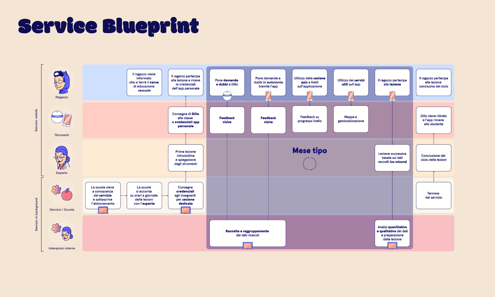
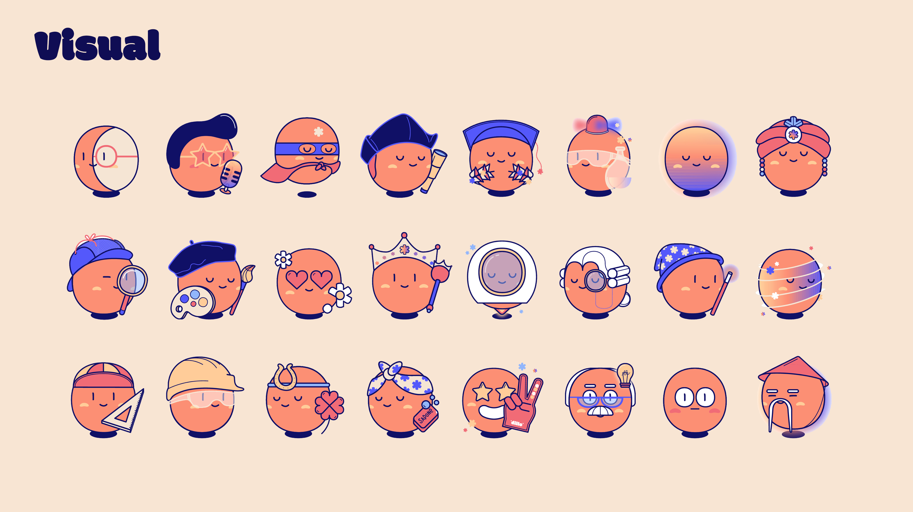
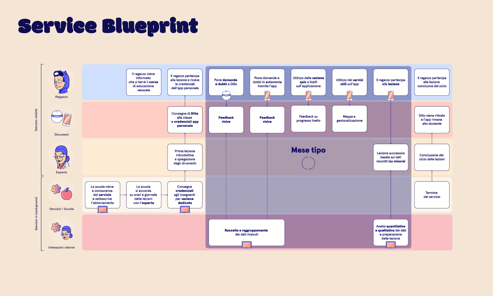
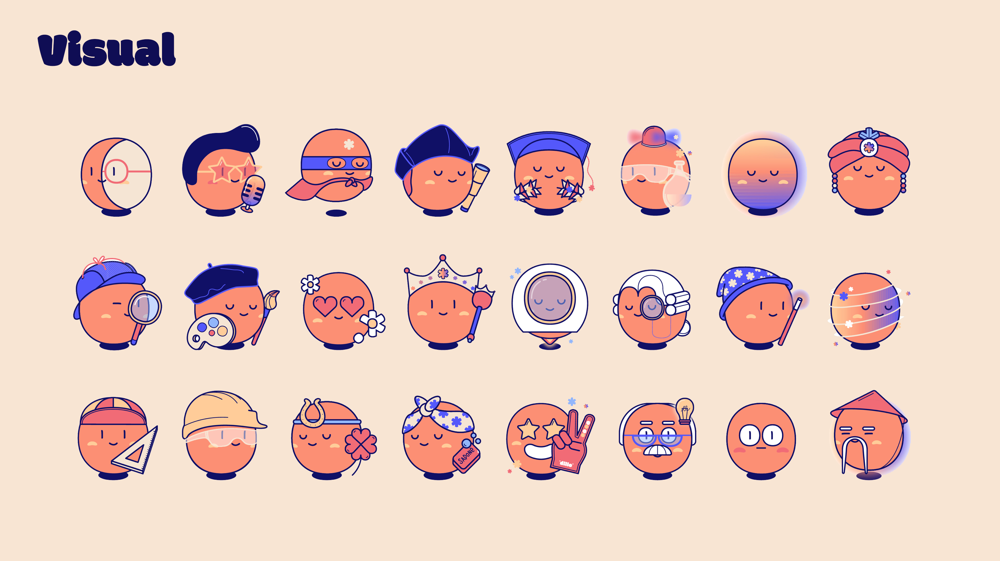
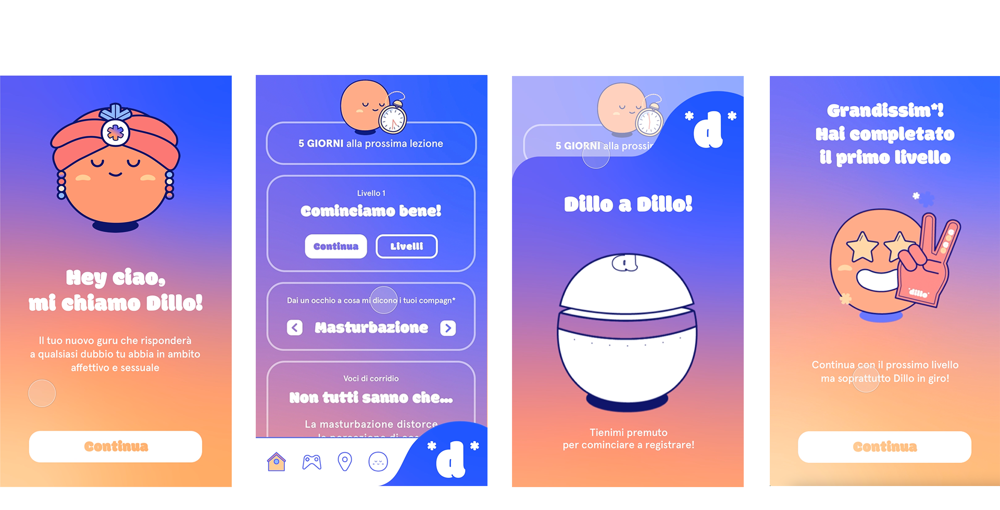
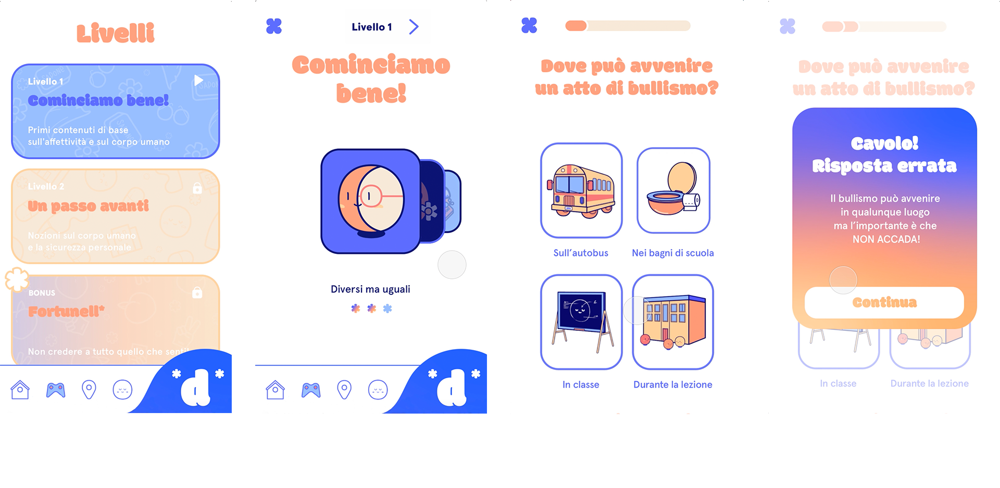
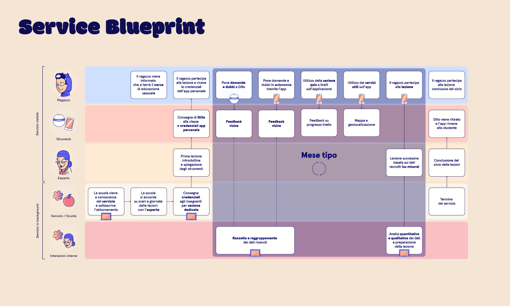
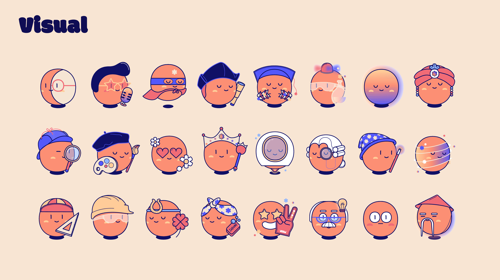

Dillo is a new inclusive sex education service that helps pre-teens becoming familiar and comfortable with all aspects of their sexuality.
 



Dillo is a new inclusive sex education service that helps pre-teens becoming familiar and comfortable with all aspects of their sexuality.
The service proposes a new way of doing sex education at school, through an interactive device inside the classroom and through a personal app for the kid that can be used outside the scolastic environment.
 These devices transform student doubts and requests into data, which are sifted by an expert who generates tailor-made lessons to let children learn autonomously but also safely.
Techniques such as desktop searches, intercepts, online questionnaires and interviews were used during the research phase, then, to develop the project concept and the service system, some UX methods have been used.

